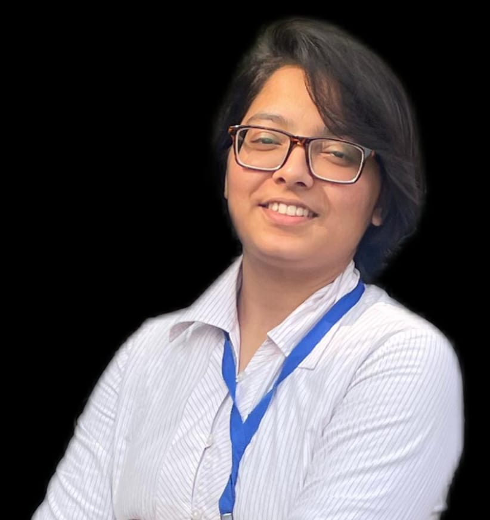

Vishakha Chaudhary

Summary
I am a hardworking and creative full-stack web developer with strong
skills in the MERN stack. My innovative approach and dedication to quality
consistently lead to successful project outcomes.
Education
- BTech,Chemical Science and Technology-Indian Institute of Technology Guwahati(2022-2026)
Work Experience
BRAIN Research Consultant-World Quant LLC
- Conducted quantitative research and used Recorded Market Data to develop and implement trading strategies.
- Alphas are back-tested on 10 Years US Equity Market Data and Sharpe Ratio,Turnover and Return are calculated.
Skills
- Web-Development: HTML, CSS, Javascript, ReactJS, NodeJS ★★★★★
- Programming: C/C++ ★★★★★
- Database Management: MongoDB* ★★★☆☆
- Miscellaneous: Git*, VS Code ★★★★★
- Operating Systems: Windows, Linux ★★★☆☆
Achievements and Extracurricular
- Selected as an open source contributor at Girl Script Summer of Code (GSSOC) in 2024.
- Achieved state-level gold in Judo and excelled at national competitions, showcasing exceptional skill and tenacity.
- Secured Silver Medal in High Prep Product Development Problem Statement at Inter IIT Tech Meet 12.0.
- Academic Mentor, guiding 8 juniors throughout their BTech program, addressing both academic and personal concerns.
- Actively participated in the speaker team for organizing TEDxIITGuwahati, inviting influential speakers for the event.
- Achieved Gold medal in Football, Kabaddi, Powerlifting, and Cricket at the inter-hostel Sports Competition.
Other